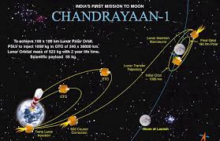

ISRO sent a lunar orbiter, Chandrayaan-1, on 22 October 2008, which
discovered lunar water in the form of ice,[21] and the Mars Orbiter
Mission, on 5 November 2013, which entered Mars orbit on 24 September
2014, making India the first nation to succeed on its maiden attempt to
Mars, as well as the first space agency in Asia to reach Mars orbit.[22]
On 18 June 2016, ISRO launched twenty satellites in a single
vehicle,[23] and on 15 February 2017, ISRO launched one hundred and four
satellites in a single rocket (PSLV-C37), a world record.[24][25] ISRO
launched its heaviest rocket, Geosynchronous Satellite Launch
Vehicle-Mark III (GSLV-Mk III), on 5 June 2017 and placed a
communications satellite GSAT-19 in orbit. With this launch, ISRO became
capable of launching 4-tonne heavy satellites into GTO. On 22 July 2019,
ISRO launched its second lunar mission Chandrayaan-2 to study the lunar
geology and the distribution of lunar water.
FORMATIVE YEARS

In 1950, the Department of Atomic Energy was founded with Bhabha as its
secretary.[30] The department provided funding for space research
throughout India.[31] During this time, tests continued on aspects of
meteorology and the Earth's magnetic field, a topic that was being
studied in India since the establishment of the observatory at Colaba in
1823. In 1954, the Uttar Pradesh state observatory was established at
the foothills of the Himalayas.[30] The Rangpur Observatory was set up
in 1957 at Osmania University, Hyderabad. Space research was further
encouraged by the government of India.[31] In 1957, the Soviet Union
launched Sputnik 1 and opened up possibilities for the rest of the world
to conduct a space launch.[31] The Indian National Committee for Space
Research (INCOSPAR) was set up in 1962